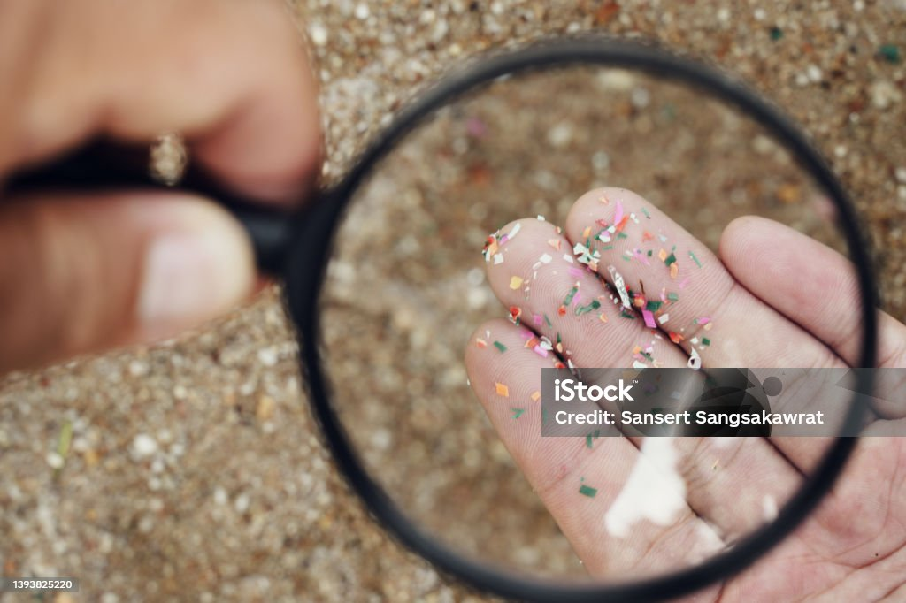

#SplashOutMicroplastics!
→ There are several ways to reduce microplastics pollution:
- ♦ Reduce single-use plastics by using reusable bags, bottles, and containers.
- ♦ Avoid products containing microbeads, such as exfoliating scrubs and toothpaste.
- ♦ Support legislation and initiatives aimed at reducing plastic production and waste.
- ♦ Participate in beach cleanups and community events focused on plastic pollution awareness.
- ♦ Properly dispose of plastic waste by recycling or using designated collection points.
Resources
1. Canva. "Blue Illustration: Keep the Ocean Clean to Preserve Marine Animals." Canva, , www.canva.com/p/templates/EAFu_c8VGqo-blue-illustration-keep-the-ocean-clean-to-preserve-marine-animals-infographic.
2. "Florida Sea Grant What Are Microplastics Infographic." Communications, 30 June 2021, blogs.ifas.ufl.edu/ifascomm/2021/06/30/florida-sea-grant-what-are-microplastics-infographic/
iStockphoto. "Microplastics at Hand: Microplastics Air Pollution, Aquatic Microplastics Food." iStockphoto, , www.istockphoto.com/photo/microplastics-at-hand-microplastics-air-pollution-aquatic-microplastics-food-gm1393825220-449523718.